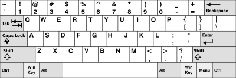
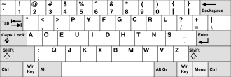
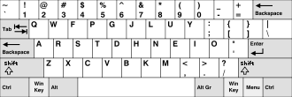
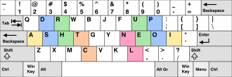
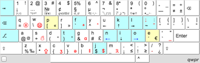
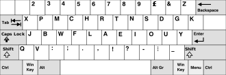
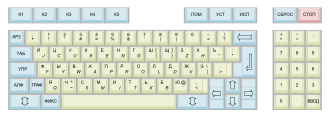
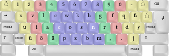
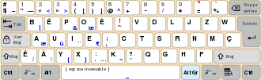

Why use a layout besides QWERTY?
QWERTY is only so widely used because it was the most popular back when people were using typewriters and to make the transition easier, people just began using that layout. It is not the most efficient layout and it isn't the fastest layout so some people decided to learn other layouts instead.
QWERTY

The standard layout that you will find on most keyboards. It was created by Christopher Sholes and became very popular because people thought that any common two-letter combinations were placed on opposite sides of the keyboard would not jam. While there is evidence to dispute this, it still became the most popular keyboard.
Dvorak

This layout concentrates on having most of the typing done on the home row. While QWERTY has 32% of the typing done on this row, the Dvorak keyboard has 70% of the typing done on this row. Dvorak is available on most operating systems and has been adapted to many other languages besides English.
Colemak

Colemak aims to provide a more ergonomic typing experience but keep some of the keys from the QWERTY layout in the same position to make the transition easier. It only changes 17 keys and keeps all the popular shortcuts. Like Dvorak, the design is focused on keeping the fingers on the home row. It does make some interesting changes such as replacing the Caps lock with another backspace key.
Workman

This layout aims to prioritize how the fingers and hands naturally move and place the most used keys in positions that make it more comfortable to reach them. The index finger prefers to curl inward while the middle and ring fingers prefer to stretch outward. It also recognizes that it takes more effort and is less natural to rotate the wrist to reach a key than to move the fingers. The keyboard takes this knowledge as well as what the most used letters are in the English language and uses them to create a keyboard with the least amount of travel distance for the fingers.
Qwpr

This layout only changes 11 keys and has the goal of being more efficient than QWERTY while still making it easier to learn than Dvorak. It is also designed for programmers and multilingual people. Hitting Caps Lock offers access to ASCII symbols and accented symbols.
QWERTY 2.0

In 1896, the creator of the QWERTY keyboard created an alternative. He placed all the vowels on the home row. This layout favors the right hand, the vowels and most of the constants on that side.
Other languages



All the keyboards above have primarily been optimized for English speakers. The placement of the keys depends on both design philosophy that the creator wants to use and which keys are most used in the language they are using. Since most of these were created with English in mind, people who use other languages will use different layouts to be more efficient or ergonomic. The pictures here represent some of the alternative layouts that are used.